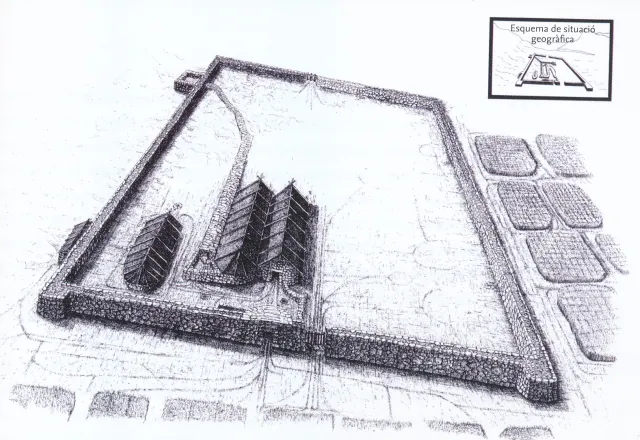
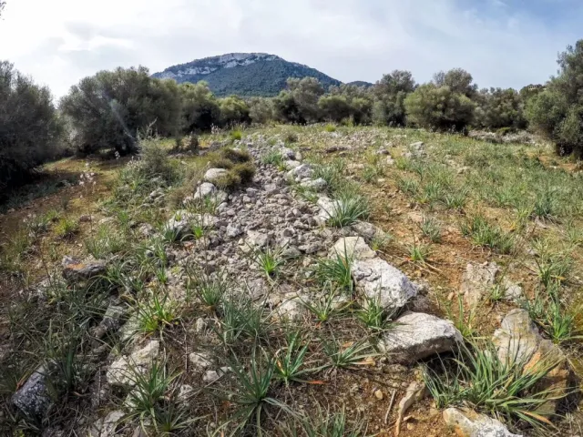

El conjunto de Son Oleza es realmente excepcional a pesar de su escasa monumentalidad. Se trata de una vivienda rural pretalayótica con restos de sus tres navetiforme de habitación, muro de piedra y diferentes dependencias. Los niveles más antiguos del yacimiento (2.300 a.C.) contienen los restos de unas cabañas hechas de materia vegetal sobre unos cimientos de piedra tallados en la roca y hogares de fuego. El lugar es muy rico en cerámica campaniforme importada.
En un nivel más reciente, sobre estas cabañas, en una segunda fase de uso del sitio, se construyó una granja de grandes proporciones. Se trata de un yacimiento al aire libre de 3.600 m2 rodeado de un gran muro perimetral de forma rectangular y aproximadamente 2,5 m de anchura en su base. Esta pared de piedra seca y doble paramento consiste en dos filas de bloques de piedra con un relleno interno de piedras y tierra. Este tipo de construcción es típica de la prehistoria de las Islas Baleares y se puede encontrar hasta el periodo postalayótico.
En dos de las esquinas se construyeron contrafuertes para reforzar los muros construidos. La entrada sur tiene una estructura similar a una torre con un pasadizo cubierto de piedra y un pequeño porche o cuerpo de guardia. Esta construcción en forma de torre no se presenta en la entrada norte. Dentro del reciento delimitado por el muro perimetral se pueden distinguir dos casas navetiformes. Las casas son de hasta 2 m. de grosor en la base. En la parte occidental del recinto se puede observar un canal de agua de unos 60 m de largo que originalmente estaba cubierto de losas de piedra y arcilla. Este canal transportaba el agua de una balsa de unos 40 m3 que se encontraba fuera del reciento a un aljibe dentro del asentamiento.
Hay una clara organización del espacio dentro del asentamiento, con la parte occidental utilizada como espacio de habitat y de trabajo y la parte oriental dedicada a los animales. En este área se encontraron mayoritariamente huesos de cabras y ovejas y el resto de bovinos y cerdos. Se encontraron cerca de 700 fragmentos de pedernales y hoces. La gran cantidad de estos objetos es una indicación de una industria lítica de alta calidad y por otra parte prueba una actividad agrícola en el yacimiento. Lo más probable es que las especies cultivadas fuesen trigo y cebada.